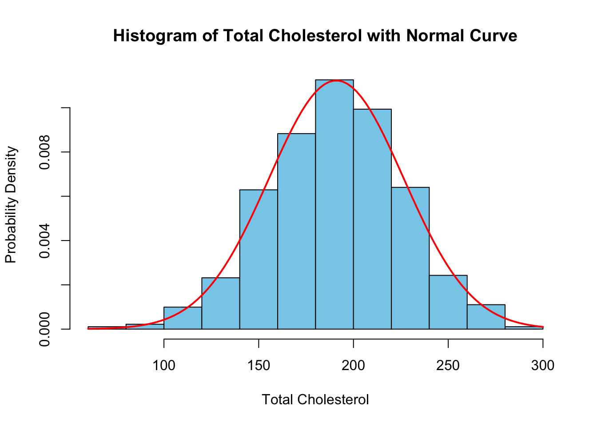
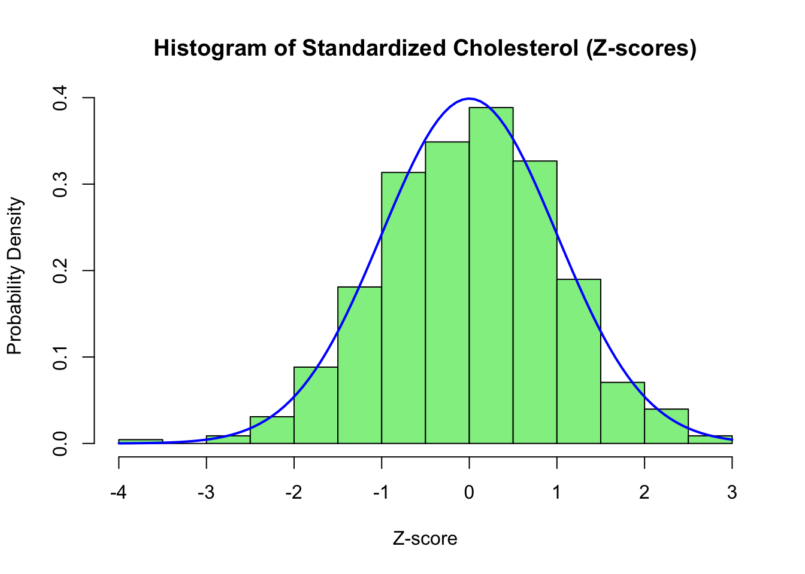
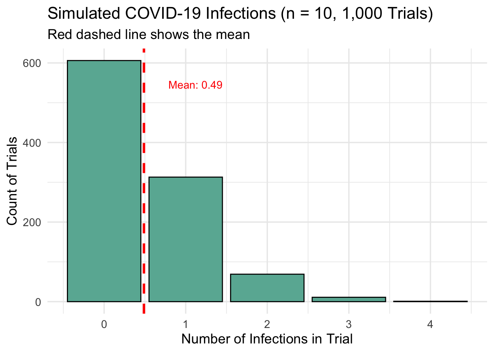
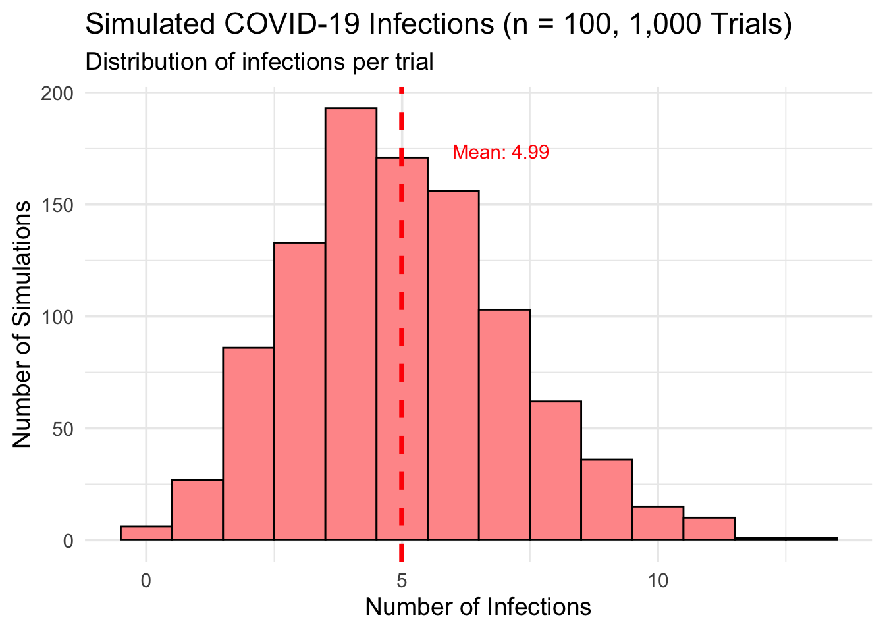
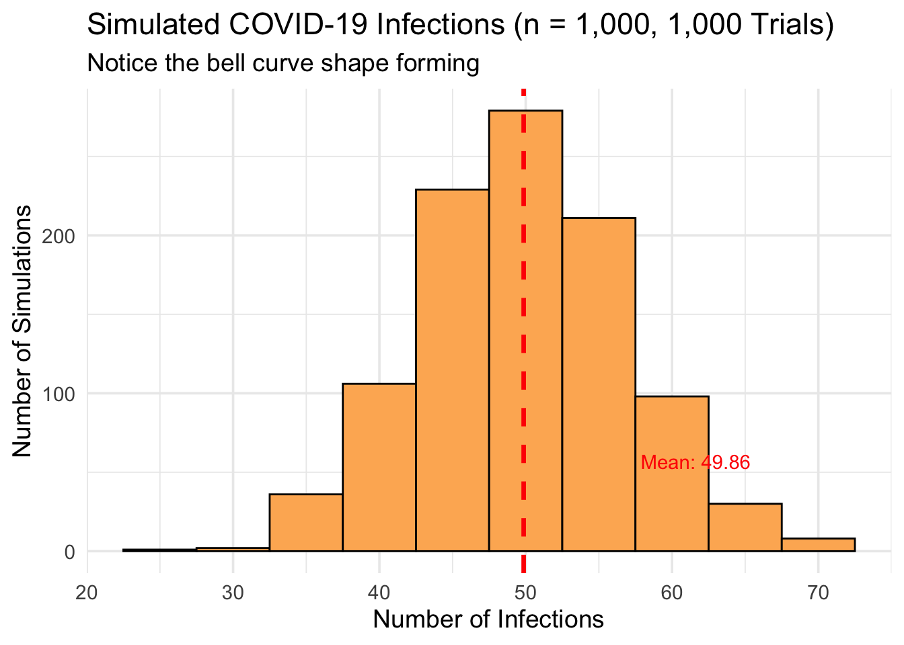

This file explores creating stacked normal distribution plots, calculating probabilities in normal distributions, covid simulation of events simulating a binomial distribution as well as problems from the Textbook. All internet resources are cited in APA format at the end of this PDF document.
Part 1: Cholesterol Dataset (Normal Distribution)
Q1: Probability Histogram
Make a histogram of the total cholesterol readings in this dataset, with the y-axis equal to the probability of being in each bar (not the frequency). Estimate the mean and standard deviation of this normal distribution. Give the estimates of these parameters, super-impose a normal distribution with that mean and SD on the histogram.
# Only read in the dataset if it hasn't been loaded yetif (!exists("chol_data")) { chol_data <-read.csv("cholesterol.txt")cat("Data loaded.\n")} else {cat("Using previously loaded data.\n")}
Data loaded.
# PART 1: Histogram with normal curve ---------------------------------------# Extract Total Cholesterol columnchol <- chol_data$TOTCHOL# Calculate mean and standard deviationchol_mean <-mean(chol)chol_sd <-sd(chol)# Plot histogram with probability densityhist(chol,probability =TRUE,col ="skyblue",main ="Histogram of Total Cholesterol with Normal Curve",xlab ="Total Cholesterol",ylab ="Probability Density",border ="black")# Overlay normal distribution curvecurve(dnorm(x, mean = chol_mean, sd = chol_sd),col ="red", lwd =2, add =TRUE)

# Output statscat("Mean Total Cholesterol:", chol_mean, "\n")
Mean Total Cholesterol: 190.9625
cat("Standard Deviation:", chol_sd, "\n")
Standard Deviation: 35.52988
Q2: Stacked Histogram
Create a new variable that is a standardized version of total cholesterol by subtracting off the mean and dividing by the standard deviation. Make another histogram, this time of the standardized data. Superimpose a standard normal curve (“standard normal”: mean=0, SD=1)
# PART 2: Standardize Total Cholesterol and plot --------------------------------# Only compute standardized values if they don't already existif (!"chol_std"%in%names(chol_data)) {# Standardize the data: Z = (X - mean) / SD chol_data$chol_std <- (chol_data$TOTCHOL - chol_mean) / chol_sdcat("Standardized cholesterol values added to dataset.\n")} else {cat("Standardized cholesterol already exists.\n")}
Standardized cholesterol values added to dataset.
# Extract standardized valueschol_std <- chol_data$chol_std# Plot histogram of standardized valueshist(chol_std,probability =TRUE,col ="lightgreen",main ="Histogram of Standardized Cholesterol (Z-scores)",xlab ="Z-score",ylab ="Probability Density",border ="black")# Overlay standard normal curve (mean = 0, sd = 1)curve(dnorm(x, mean =0, sd =1),col ="blue", lwd =2, add =TRUE)

# Optional: Print a few sample Z-scorescat("Example standardized values:\n")
The American Heart Association (previously) defined “High (Total) Cholesterol” as 240 or above. What proportion of the people in this dataset have total cholesterol of 240 or above?
# PART 3: Proportion with high cholesterol -----------------------------------# Only compute if not already calculatedif (!exists("high_chol_prop")) { high_chol_count <-sum(chol_data$TOTCHOL >=240) total_count <-nrow(chol_data) high_chol_prop <- high_chol_count / total_countcat("Number of people with cholesterol ≥ 240:", high_chol_count, "\n")cat("Total number of people:", total_count, "\n")cat("Proportion with high cholesterol:", round(high_chol_prop, 4), "\n")} else {cat("Proportion with high cholesterol already computed.\n")}
Number of people with cholesterol ≥ 240: 33
Total number of people: 453
Proportion with high cholesterol: 0.0728
Q4: Imagine you wanted to compare the population from which this sample is drawn to a different population, in which it is well-documented that 10% of people have total cholesterol of 240 or above.
a) Thought question about True Population Metrics and conditional probability P(x=33)
If the true rate of high cholesterol in this population were 10%, what is the probability that you would see exactly as many people with high cholesterol as you saw here? (hint, you don’t need to use the dataset to answer this) We now want to assess the probability of observing exactly 33 individuals with high cholesterol (defined as total cholesterol ≥ 240) in a sample of 453, under the assumption that the true population rate is 10%.
This is a binomial probability problem, modeled as:
b) Thought question about True Population Metrics and conditional probability P(x >=33)
If the true rate of high cholesterol in this population were 10%, what is the probability that you would see at least as many people with high cholesterol as you saw here? (hint, you don’t need to use the dataset to answer this)
To evaluate how surprising our observed result is, we calculate the probability of observing 33 or more individuals with high cholesterol in a sample of 453, assuming the true population rate is 10%.
This is the cumulative probability of the upper tail of the binomial distribution:
n = 453 (sample size)
x = 33 (observed count)
p = 0.10 (true population rate)
We compute this using:
# Parametersn <-453x <-33p <-0.10# Probability of seeing 33 or more casesp_at_least <-1-pbinom(x -1, size = n, prob = p)p_at_least
[1] 0.9811643
Part 2: Covid Simulation
Read the document on Simulations in R in module 3, about for loops. Let’s pretend we planning a covid-19 vaccine study, and need to think about how many covid-19 infections we might see during the course of the trial. Assume the true incidence is 5% ; that is, if we looked at the whole population, 5% of people will get infected with covid-19 during the study follow-up. Use the examples in the simulation document to do 3 simulations; each simulation should have 1,000 repetitions:
Q1: Make a histogram of how many infections we can expect if we follow 10 people for the course of the trial.
# Load ggplot2 if not already loadedif (!require("ggplot2")) install.packages("ggplot2", dependencies =TRUE)library(ggplot2)# Parametersset.seed(123)n_sim <-1000size_1 <-10p_inf <-0.05# Simulate infectionssim_10 <-rbinom(n = n_sim, size = size_1, prob = p_inf)df_10 <-data.frame(infections = sim_10)# Compute meanmean_10 <-mean(sim_10)# Plot with ggplot2ggplot(df_10, aes(x = infections)) +geom_bar(fill ="#69b3a2", color ="black", width =0.9) +geom_vline(xintercept = mean_10, color ="red", linetype ="dashed", linewidth =1.2) +annotate("text", x = mean_10 +0.3, y =max(table(sim_10)) *0.9,label =paste("Mean:", round(mean_10, 2)),color ="red", hjust =0) +labs(title ="Simulated COVID-19 Infections (n = 10, 1,000 Trials)",subtitle ="Red dashed line shows the mean",x ="Number of Infections in Trial",y ="Count of Trials") +theme_minimal(base_size =14)

Q2: Make a histogram of how many infections we can expect if we follow 100 people for the course of the trial.
# Load ggplot2 if not already loadedif (!require("ggplot2")) install.packages("ggplot2", dependencies =TRUE)library(ggplot2)# Parametersset.seed(123)n_sim <-1000size_2 <-100p_inf <-0.05# Simulate infectionssim_100 <-rbinom(n = n_sim, size = size_2, prob = p_inf)df_100 <-data.frame(infections = sim_100)# Compute meanmean_100 <-mean(sim_100)# Plotggplot(df_100, aes(x = infections)) +geom_histogram(binwidth =1, fill ="#FF9999", color ="black") +geom_vline(xintercept = mean_100, color ="red", linetype ="dashed", linewidth =1.2) +annotate("text", x = mean_100 +1, y =max(table(sim_100)) *0.9,label =paste("Mean:", round(mean_100, 2)),color ="red", hjust =0) +labs(title ="Simulated COVID-19 Infections (n = 100, 1,000 Trials)",subtitle ="Distribution of infections per trial",x ="Number of Infections",y ="Number of Simulations") +theme_minimal(base_size =14)

Q3: Make a histogram of how many infections we can expect if we follow 1,000 people for the course of the trial.
# Load ggplot2 if neededif (!require("ggplot2")) install.packages("ggplot2", dependencies =TRUE)library(ggplot2)# Parametersset.seed(123)n_sim <-1000size_3 <-1000p_inf <-0.05# Simulate infectionssim_1000 <-rbinom(n = n_sim, size = size_3, prob = p_inf)df_1000 <-data.frame(infections = sim_1000)# Compute meanmean_1000 <-mean(sim_1000)# Plotggplot(df_1000, aes(x = infections)) +geom_histogram(binwidth =5, fill ="#FDB462", color ="black") +geom_vline(xintercept = mean_1000, color ="red", linetype ="dashed", linewidth =1.2) +annotate("text", x = mean_1000 +8, y =max(table(sim_1000)) *0.9,label =paste("Mean:", round(mean_1000, 2)),color ="red", hjust =0) +labs(title ="Simulated COVID-19 Infections (n = 1,000, 1,000 Trials)",subtitle ="Notice the bell curve shape forming",x ="Number of Infections",y ="Number of Simulations") +theme_minimal(base_size =14)

Reflection Question: Briefly describe what you notice about the three histograms. Can you explain why?
As the sample size increased from 10 to 100 to 1,000, the histograms became progressively more symmetric and concentrated around the expected number of infections.
For a sample size of 10, the histogram was more irregular and skewed, with a wider relative spread.
At 100, the distribution became more bell-shaped and centered around the expected value of 5 infections.
By 1,000, the histogram closely resembled a normal distribution, centered around 50 infections, with much less relative variability.
This trend occurs because of two main reasons: 1. Law of Large Numbers – larger samples tend to produce more stable and accurate estimates of the true proportion. 2. Central Limit Theorem – the sum of many independent Bernoulli trials (like infection outcomes) tends to approximate a normal distribution as sample size increases.
Overall, the histograms demonstrate how increasing sample size leads to more predictable and less variable trial outcomes.
Part 3: Chapter 7 Textbook Problems
Q10: Consider a group of seven individuals selected form the population of 65- to 74-year olds in the United States. The number of persons in this sample who suffer from diabetes is a binomial random variable with parameters n=7 and p=0.125
a) If you wish to make a list of the seven persons chosen, in how many ways can they be ordered?We are selecting 7 individuals and want to know how many ways we can order them.
This is a permutation problem, where order does matter.
The number of ways to order \(n\) individuals is given by:
c) what is the probability that exactly two of the individuals in your sample suffer from diabetes?
We want to find the probability that exactly 2 individuals in a sample of 7 have diabetes,
given that the diabetes rate in this population is 12.5% (i.e., \(p = 0.125\)).
Let: - \(X \sim \text{Binomial}(n = 7, p = 0.125)\)
- We want \(P(X = 2)\)
This probability can be calculated in R as:
dbinom(2, size =7, prob =0.125)
[1] 0.1682982
d) what is the probability that four of them have diabetes?
We now want to calculate the probability that exactly 4 out of 7 individuals have diabetes,
assuming the population diabetes rate is \(p = 0.125\).
Let: - \(X \sim \text{Binomial}(n = 7, p = 0.125)\)
- We want \(P(X = 4)\)
We can compute this in R with:
dbinom(4, size =7, prob =0.125)
[1] 0.00572443
Q12: According to the Behavioral Risk Factor Surveillance System, 58% of all Americans adhere to a sedentary lifestyle
a) If you selected repeated samples of size 12 from the US population, what would be the mean number of individuals per sample who do not exercise regularly? What would be the standard deviation?
We are told that 58% of Americans are sedentary. If we take repeated samples of 12 individuals, the number of sedentary individuals per sample follows a binomial distribution:
Let:
- \(n = 12\) (sample size)
- \(p = 0.58\) (probability of being sedentary)
We use the formulas for the binomial distribution:
Mean (\(\mu\)) is: \(\mu = n \cdot p = 12 \cdot 0.58 = 6.96\)
Standard Deviation (\(\sigma\)) is: \(\sigma = \sqrt{n \cdot p \cdot (1 - p)} = \sqrt{12 \cdot 0.58 \cdot 0.42} \approx 1.71\)
# Parametersn <-12p <-0.58# Mean and standard deviationmean_sedentary <- n * psd_sedentary <-sqrt(n * p * (1- p))mean_sedentary
[1] 6.96
sd_sedentary
[1] 1.709737
b) Suppose you select a sample of 12 individuals and find that 10 of them do not exercise regularly. Assuming the Surveillance System is correct, what is the probability you would have obtained results as bad or worse than those you observed?
In a sample of 12 individuals, we observe that 10 do not exercise regularly.
We want to find the probability of observing 10 or more sedentary individuals, assuming the true sedentary rate is 58%.
Let: - \(X \sim \text{Binomial}(n = 12, p = 0.58)\)
- We want \(P(X \geq 10)\)
This can be calculated in R as:
n <-12p <-0.58# Probability of observing 10 or more sedentary individualsprob_10_or_more <-1-pbinom(9, size = n, prob = p)prob_10_or_more
[1] 0.06419844
Q20: Framingham Study
In the Framingham study, serum cholesterol levels were measured for a large number of healthy males. The population was followed for 16 years. At the end of the time, the men were divided into 2 groups: those who had developed coronary disease and those who had not. The distributions of the initial serum cholesterol levels for each group were found to be approximately normal. Among individuals who eventually developed coronary disease, the mean serum cholesterol level was μd= 244 mg/100 ml and the standard deviation was σd=51 mg/100ml; for those who did not go on to develop the disease, the mean serum cholesterol was μnd= 219 mg/100 ml and the standard deviation was σd=41 mg/100ml.
a) Suppose that an initial serum cholesterol level of 260 mg/100ml was used to predict coronary heart disease. What is the probability of correctly predicting heart disease for a man who will go on to develop it?
b) Using the cutpoint in (a), What is the probability of predicting heart disease for a man who will not go on to develop it?
c) Using the cutpoint in (a), What is the probability of failing to predict heart disease for a man who will develop it?
d) What would happen to the probabilities of false positives and false negative errors if the cutoff point for predicting heart disease was lowered to 250 mg/100 ml?
e) In ths population, does initial serum cholesterol appear to be useful for predicting coronary heart disease? Why or why not?